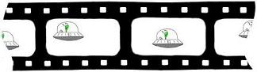
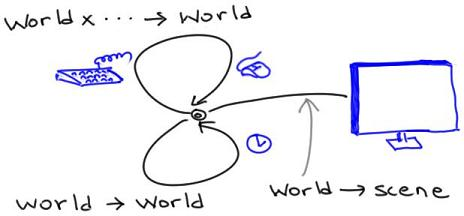

27 Interactive Games as Reactive Systems
In this tutorial we’re going to write a little interactive game. The game won’t be sophisticated, but it’ll have all the elements you need to build much richer games of your own.

Albuquerque Balloon Fiesta
Imagine we have an airplane coming in to land. It’s unfortunately trying to do so amidst a hot-air balloon festival, so it naturally wants to avoid colliding with any (moving) balloons. In addition, there is both land and water, and the airplane needs to alight on land. We might also equip it with limited amounts of fuel to complete its task. Here are some animations of the game:
- The airplane comes in to land succcessfully.
- Uh oh—the airplane collides with a balloon!
- Uh oh—the airplane lands in the water!
By the end, you will have written all the relevant portions of this program. Your program will:
- animate the airplane to move autonomously;
- detect keystrokes and adjust the airplane accordingly;
- have multiple moving balloons;
- detect collisions between the airplane and balloons;
- check for landing on water and land; and
- account for the use of fuel.
Phew: that’s a lot going on! Therefore, we won’t write it all at once; instead, we’ll build it up bit-by-bit. But we’ll get there by the end.
27.1 About Reactive Animations
We are writing a program with two important interactive elements: it is an animation, meaning it gives the impression of motion, and it is reactive, meaning it responds to user input. Both of these can be challenging to program, but Pyret provides a simple mechanism that accommodates both and integrates well with other programming principles such as testing. We will learn about this as we go along.
The key to creating an animation is the Movie Principle. Even in the most sophisticated movie you can watch, there is no motion (indeed, the very term “movie”—short for “moving picture”—is a clever bit of false advertising). Rather, there is just a sequence of still images shown in rapid succession, relying on the human brain to create the impression of motion:

We are going to exploit the same idea: our animations will consist of a sequence of individual images, and we will ask Pyret to show these in rapid succession. We will then see how reactivity folds into the same process.
27.2 Preliminaries
To begin with, we should inform Pyret that we plan to make use of both images and animations. We load the libraries as follows:
import image as I
import reactors as RThis tells Pyret to load these two libraries and bind the results to
the corresponding names,
I
and
R.
Thus, all image operations are obtained from
I
and animation operations from
R.
27.3 Version: Airplane Moving Across the Screen
We will start with the simplest version: one in which the airplane moves horizontally across the screen. Watch this video.
First, here’s an image of an airplane:Have fun finding your preferred airplane image! But don’t spend too long on it, because we’ve still got a lot of work to do.
http://world.cs.brown.edu/1/clipart/airplane-small.png
{kind=link}
We can tell Pyret to load this image and give it a name as follows:
AIRPLANE-URL =
"http://world.cs.brown.edu/1/clipart/airplane-small.png"
AIRPLANE = I.image-url(AIRPLANE-URL)Henceforth, when we refer to
AIRPLANE,
it will always refer to this image. (Try it out in the interactions
area!)
Now look at the video again. Watch what happens at different points in time. What stays the same, and what changes? What’s common is the water and land, which stay the same. What changes is the (horizontal) position of the airplane.
Note
The World State consists of everything that changes. Things that stay the same do not need to get recorded in the World State.
We can now define our first World State:
World Definition
The World State is a number, representing the x-position of the airplane.
Observe something important above:
Note
When we record a World State, we don’t capture only the type of the values, but also their intended meaning.
Now we have a representation of the core data, but to generate the above animation, we still have to do several things:
- Ask to be notified of the passage of time.
- As time passes, correspondingly update the World State.
- Given an updated World State, produce the corresponding visual display.
This sounds like a lot! Fortunately, Pyret makes this much easier than it sounds. We’ll do these in a slightly different order than listed above.
27.3.1 Updating the World State
As we’ve noted, the airplane doesn’t actually “move”. Rather, we can ask Pyret to notify us every time a clock ticks. If on each tick we place the airplane in an appropriately different position, and the ticks happen often enough, we will get the impression of motion.
Because the World State consists of just the airplane’s x-position, to move it to the right, we simply increment its value. Let’s first give this constant distance a name:
AIRPLANE-X-MOVE = 10We will need to write a function that reflects this movement. Let’s first write some test cases:
check:
move-airplane-x-on-tick(50) is 50 + AIRPLANE-X-MOVE
move-airplane-x-on-tick(0) is 0 + AIRPLANE-X-MOVE
move-airplane-x-on-tick(100) is 100 + AIRPLANE-X-MOVE
endThe function’s definition is now clear:
fun move-airplane-x-on-tick(w):
w + AIRPLANE-X-MOVE
endAnd sure enough, Pyret will confirm that this function passes all of its tests.
Note
If you have prior experience programming animations and reactive programs, you will immediately notice an important difference: it’s easy to test parts of your program in Pyret!
27.3.2 Displaying the World State
Now we’re ready to draw the game’s visual output. We produce an image that consists of all the necessary components. It first helps to define some constants representing the visual output:
WIDTH = 800
HEIGHT = 500
BASE-HEIGHT = 50
WATER-WIDTH = 500Using these, we can create a blank canvas, and overlay rectangles representing water and land:
BLANK-SCENE = I.empty-scene(WIDTH, HEIGHT)
WATER = I.rectangle(WATER-WIDTH, BASE-HEIGHT, "solid", "blue")
LAND = I.rectangle(WIDTH - WATER-WIDTH, BASE-HEIGHT, "solid", "brown")
BASE = I.beside(WATER, LAND)
BACKGROUND =
I.place-image(BASE,
WIDTH / 2, HEIGHT - (BASE-HEIGHT / 2),
BLANK-SCENE)Examine the value of
BACKGROUND
in the interactions area to confirm that it looks right.
Do Now!
The reason we divide by two when placing
BASEis because Pyret puts the middle of the image at the given location. Remove the division and see what happens to the resulting image.
Now that we know how to get our background, we’re ready to place the airplane on it. The expression to do so looks roughly like this:
I.place-image(AIRPLANE,
# some x position,
50,
BACKGROUND)but what x position do we use? Actually, that’s just what the World State represents! So we create a function out of this expression:
fun place-airplane-x(w):
I.place-image(AIRPLANE,
w,
50,
BACKGROUND)
end27.3.3 Observing Time (and Combining the Pieces)
Finally, we’re ready to put these pieces together.
We create a special kind of Pyret value called a reactor, which creates animations. We’ll start by creating a fairly simple kind of reactor, then grow it as the program gets more sophisticated.
The following code creates a reactor named
anim:
anim = reactor:
init: 0,
on-tick: move-airplane-x-on-tick,
to-draw: place-airplane-x
endA reactor needs to be given an initial World State as well as
handlers that tell it how to react. Specifying
on-tick
tells Pyret to run a clock and, every time the clock ticks (roughly
thirty times a second), invoke the associated handler. The
to-draw
handler is used by Pyret to refresh the visual display.
Having defined this reactor, we can run it in several ways that are useful for finding errors, running scientific experiments, and so on. Our needs here are simple; we ask Pyret to just run the program on the screen interactively:
R.interact(anim)This creates a running program where the airplane flies across the background!
That’s it! We’ve created our first animation. Now that we’ve gotten all the preliminaries out of the way, we can go about enhancing it.
Exercise
If you want the airplane to appear to move faster, what can you change?
27.4 Version: Wrapping Around
When you run the preceding program, you’ll notice that after a while, the airplane just disappears. This is because it has gone past the right edge of the screen; it is still being “drawn”, but in a location that you cannot see. That’s not very useful![Also, after a long while you might get an error because the computer is being asked to draw the airplane at a location beyond what the graphics system can manage.] Instead, when the airplane is about to go past the right edge of the screen, we’d like it to reappear on the left by a corresponding amount: “wrapping around”, as it were.
Here’s the video for this version.
Do Now!
What needs to change?
Clearly, we need to modify the function that updates the airplane’s location, since this must now reflect our decision to wrap around. But the task of how to draw the airplane doesn’t need to change at all! Similarly, the definition of the World State does not need to change, either.
Therefore, we only need to modify
move-airplane-x-on-tick.
The function
num-modulo
does exactly what we need. That is, we want the x-location to always be
modulo the width of the scene:
fun move-airplane-wrapping-x-on-tick(x):
num-modulo(x + AIRPLANE-X-MOVE, WIDTH)
endNotice that, instead of copying the content of the previous definition we can simply reuse it:
fun move-airplane-wrapping-x-on-tick(x):
num-modulo(move-airplane-x-on-tick(x), WIDTH)
endwhich makes our intent clearer: compute whatever position we would have had before, but adapt the coordinate to remain within the scene’s width.
Well, that’s a proposed re-definition. Be sure to test this function thoroughly: it’s tricker than you might think! Have you thought about all the cases? For instance, what happens if the airplane is half-way off the right edge of the screen?
Exercise
Define quality tests for
move-airplane-wrapping-x-on-tick.
Note
It is possible to leave
move-airplane-x-on-tickunchanged and perform the modular arithmetic inplace-airplane-xinstead. We choose not to do that for the following reason. In this version, we really do think of the airplane as circling around and starting again from the left edge (imagine the world is a cylinder…). Thus, the airplane’s x-position really does keep going back down. If instead we allowed the World State to increase monotonically, then it would really be representing the total distance traveled, contradicting our definition of the World State.
Do Now!
After adding this function, run your program again. Did you see any change in behavior?
If you didn’t…did you remember to update your reactor to use the new airplane-moving function?
27.5 Version: Descending
Of course, we need our airplane to move in more than just one dimension: to get to the final game, it must both ascend and descend as well. For now, we’ll focus on the simplest version of this, which is an airplane that continuously descends. Here’s a video.
Let’s again consider individual frames of this video. What’s staying the same? Once again, the water and the land. What’s changing? The position of the airplane. But, whereas before the airplane moved only in the x-dimension, now it moves in both x and y. That immediately tells us that our definition of the World State is inadequate, and must be modified.
We therefore define a new structure to hold this pair of data:
data Posn:
| posn(x, y)
endGiven this, we can revise our definition:
World Definition
The World State is a
posn, representing the x-position and y-position of the airplane on the screen.
27.5.1 Moving the Airplane
First, let’s consider
move-airplane-wrapping-x-on-tick.
Previously our airplane moved only in the x-direction; now we want it to
descend as well, which means we must add something to the current y
value:
AIRPLANE-Y-MOVE = 3Let’s write some test cases for the new function. Here’s one:
check:
move-airplane-xy-on-tick(posn(10, 10)) is posn(20, 13)
endAnother way to write the test would be:
check:
p = posn(10, 10)
move-airplane-xy-on-tick(p) is
posn(move-airplane-wrapping-x-on-tick(p.x),
move-airplane-y-on-tick(p.y))
endNote
Which method of writing tests is better? Both! They each offer different advantages:
- The former method has the benefit of being very concrete: there’s no question what you expect, and it demonstrates that you really can compute the desired answer from first principles.
- The latter method has the advantage that, if you change the constants in your program (such as the rate of descent), seemingly correct tests do not suddenly fail. That is, this form of testing is more about the relationships between things rather than their precise values.
There is one more choice available, which often combines the best of both worlds: write the answer as concretely as possible (the former style), but using constants to compute the answer (the advantage of the latter style). For instance:
check: p = posn(10, 10) move-airplane-xy-on-tick(p) is posn(num-modulo(p.x + AIRPLANE-X-MOVE, WIDTH), p.y + AIRPLANE-Y-MOVE) end
Exercise
Before you proceed, have you written enough test cases? Are you sure? Have you, for instance, tested what should happen when the airplane is near the edge of the screen in either or both dimensions? We thought not—go back and write more tests before you proceed!
Using the design recipe, now define
move-airplane-xy-on-tick.
You should end up with something like this:
fun move-airplane-xy-on-tick(w):
posn(move-airplane-wrapping-x-on-tick(w.x),
move-airplane-y-on-tick(w.y))
endNote that we have reused the existing function for the x-dimension and, correspondingly, created a helper for the y dimension:
fun move-airplane-y-on-tick(y):
y + AIRPLANE-Y-MOVE
endThis may be slight overkill for now, but it does lead to a cleaner separation of concerns, and makes it possible for the complexity of movement in each dimension to evolve independently while keeping the code relatively readable.
27.5.2 Drawing the Scene
We have to also examine and update
place-airplane-x.
Our earlier definition placed the airplane at an arbitrary y-coordinate;
now we have to take the y-coordinate from the World State:
fun place-airplane-xy(w):
I.place-image(AIRPLANE,
w.x,
w.y,
BACKGROUND)
endNotice that we can’t really reuse the previous definition because it hard-coded the y-position, which we must now make a parameter.
27.5.3 Finishing Touches
Are we done? It would seem so: we’ve examined all the procedures that consume and produce World State and updated them appropriately. Actually, we’re forgetting one small thing: the initial World State given to the reactor! If we’ve changed the definition of World State, then we need to update this too. (We also need to use the new functions rather than the old ones.)
INIT-POS = posn(0, 0)
anim = reactor:
init: INIT-POS,
on-tick: move-airplane-xy-on-tick,
to-draw: place-airplane-xy
end
R.interact(anim)Exercise
It’s a little unsatisfactory to have the airplane truncated by the screen. You can use
I.image-widthandI.image-heightto obtain the dimensions of an image, such as the airplane. Use these to ensure the airplane fits entirely within the screen for the initial scene, and similarly inmove-airplane-xy-on-tick.
27.6 Version: Responding to Keystrokes
Now that we have the airplane descending, there’s no reason it can’t ascend as well. Here’s a video.
We’ll use the keyboard to control its motion: specifically, the
up-key will make it move up, while the down-key will make it descend
even faster. This is easy to support using what we already know: we just
need to provide one more handler using
on-key.
This handler takes two arguments: the first is the current value of the
world, while the second is a representation of which key was pressed.
For the purposes of this program, the only key values we care about are
"up"
and
"down".
This gives us a fairly comprehensive view of the core capabilities of reactors:

We just define a group of functions to perform all our desired actions, and the reactor strings them together. Some functions update world values (sometimes taking additional information about a stimulus, such as the key pressed), while others transform them into output (such as what we see on the screen).
Returning to our program, let’s define a constant representing how much distance a key represents:
KEY-DISTANCE = 10Now we can define a function that alter’s the airplane’s position by that distance depending on which key is pressed:
fun alter-airplane-y-on-key(w, key):
ask:
| key == "up" then: posn(w.x, w.y - KEY-DISTANCE)
| key == "down" then: posn(w.x, w.y + KEY-DISTANCE)
| otherwise: w
end
endDo Now!
Why does this function definition contain
| otherwise: was its last condition?
Notice that if we receive any key other than the two we expect, we leave the World State as it was; from the user’s perspective, this has the effect of just ignoring the keystroke. Remove this last clause, press some other key, and watch what happens!
No matter what you choose, be sure to test this! Can the airplane drift off the top of the screen? How about off the screen at the bottom? Can it overlap with the land or water?
Once we’ve written and thoroughly tested this function, we simply need to ask Pyret to use it to handle keystrokes:
anim = reactor:
init: INIT-POS,
on-tick: move-airplane-xy-on-tick,
on-key: alter-airplane-y-on-key,
to-draw: place-airplane-xy
endNow your airplane moves not only with the passage of time but also in response to your keystrokes. You can keep it up in the air forever!
27.7 Version: Landing
Remember that the objective of our game is to land the airplane, not to keep it airborne indefinitely. That means we need to detect when the airplane reaches the land or water level and, when it does, terminate the animation.
First, let’s try to characterize when the animation should halt. This
means writing a function that consumes the current World State and
produces a boolean value:
true
if the animation should halt,
false
otherwise. This requires a little arithmetic based on the airplane’s
size:
fun is-on-land-or-water(w):
w.y >= (HEIGHT - BASE-HEIGHT)
endWe just need to inform Pyret to use this predicate to automatically halt the reactor:
anim = reactor:
init: INIT-POS,
on-tick: move-airplane-xy-on-tick,
on-key: alter-airplane-y-on-key,
to-draw: place-airplane-xy,
stop-when: is-on-land-or-water
endExercise
When you test this, you’ll see it isn’t quite right because it doesn’t take account of the size of the airplane’s image. As a result, the airplane only halts when it’s half-way into the land or water, not when it first touches down. Adjust the formula so that it halts upon first contact.
Exercise
Extend this so that the airplane rolls for a while upon touching land, decelerating according to the laws of physics.
Exercise
Suppose the airplane is actually landing at a secret subterranean airbase. The actual landing strip is actually below ground level, and opens up only when the airplane comes in to land. That means, after landing, only the parts of the airplane that stick above ground level would be visible. Implement this. As a hint, consider modifying
place-airplane-xy.
27.8 Version: A Fixed Balloon
Now let’s add a balloon to the scene. Here’s a video of the action.
Notice that while the airplane moves, everything else—including the balloon—stays immobile. Therefore, we do not need to alter the World State to record the balloon’s position. All we need to do is alter the conditions under which the program halts: effectively, there is one more situation under which it terminates, and that is a collision with the balloon.
When does the game halt? There are now two circumstances: one is contact with land or water, and the other is contact with the balloon. The former remains unchanged from what it was before, so we can focus on the latter.
Where is the balloon, and how do we represent where it is? The latter
is easy to answer: that’s what
posns
are good for. As for the former, we can decide where it is:
BALLOON-LOC = posn(600, 300)or we can let Pyret pick a random position:
BALLOON-LOC = posn(random(WIDTH), random(HEIGHT))Exercise
Improve the random placement of the balloon so that it is in credible spaces (e.g., not submerged).
Given a position for the balloon, we just need to detect collision. One simple way is as follows: determine whether the distance between the airplane and the balloon is within some threshold:
fun are-overlapping(airplane-posn, balloon-posn):
distance(airplane-posn, balloon-posn)
< COLLISION-THRESHOLD
endwhere
COLLISION-THRESHOLD
is some suitable constant computed based on the sizes of the airplane
and balloon images. (For these particular images,
75
works pretty well.)
What is
distance?
It consumes two
posns
and determines the Euclidean distance between them:
fun distance(p1, p2):
fun square(n): n * n end
num-sqrt(square(p1.x - p2.x) + square(p1.y - p2.y))
endFinally, we have to weave together the two termination conditions:
fun game-ends(w):
ask:
| is-on-land-or-water(w) then: true
| are-overlapping(w, BALLOON-LOC) then: true
| otherwise: false
end
endand use it instead:
anim = reactor:
init: INIT-POS,
on-tick: move-airplane-xy-on-tick,
on-key: alter-airplane-y-on-key,
to-draw: place-airplane-xy,
stop-when: game-ends
endDo Now!
Were you surprised by anything? Did the game look as you expected?
Odds are you didn’t see a balloon on the screen! That’s because we didn’t update our display.
You will need to define the balloon’s image:
BALLOON-URL =
"http://world.cs.brown.edu/1/clipart/balloon-small.png"
BALLOON = I.image-url(BALLOON-URL)and also update the drawing function:
BACKGROUND =
I.place-image(BASE,
WIDTH / 2, HEIGHT - (BASE-HEIGHT / 2),
I.place-image(BALLOON,
BALLOON-LOC.x, BALLOON-LOC.y,
BLANK-SCENE))Do Now!
Do you see how to write
game-endsmore concisely?
Here’s another version:
fun game-ends(w):
is-on-land-or-water(w) or are-overlapping(w, BALLOON-LOC)
end27.9 Version: Keep Your Eye on the Tank
Now we’ll introduce the idea of fuel. In our simplified world, fuel isn’t necessary to descend—gravity does that automatically—but it is needed to climb. We’ll assume that fuel is counted in whole number units, and every ascension consumes one unit of fuel. When you run out of fuel, the program no longer responds to the up-arrow, so you can no longer avoid either the balloon or water.
In the past, we’ve looked at still images of the game video to determine what is changing and what isn’t. For this version, we could easily place a little gauge on the screen to show the quantity of fuel left. However, we don’t on purpose, to illustrate a principle.
Note
You can’t always determine what is fixed and what is changing just by looking at the image. You have to also read the problem statement carefully, and think about it in depth.
It’s clear from our description that there are two things changing: the position of the airplane and the quantity of fuel left. Therefore, the World State must capture the current values of both of these. The fuel is best represented as a single number. However, we do need to create a new structure to represent the combination of these two.
World Definition
The World State is a structure representing the airplane’s current position and the quantity of fuel left.
Concretely, we will use this structure:
data World:
| world(p, f)
endExercise
We could have also defined the World to be a structure consisting of three components: the airplane’s x-position, the airplane’s y-position, and the quantity of fuel. Why do we choose to use the representation above?
We can again look at each of the parts of the program to determine
what can stay the same and what changes. Concretely, we must focus on
the functions that consume and produce
Worlds.
On each tick, we consume a world and compute one. The passage of time does not consume any fuel, so this code can remain unchanged, other than having to create a structure containing the current amount of fuel. Concretely:
fun move-airplane-xy-on-tick(w :: World):
world(
posn(
move-airplane-wrapping-x-on-tick(w.p.x),
move-airplane-y-on-tick(w.p.y)),
w.f)
endSimilarly, the function that responds to keystrokes clearly needs to take into account how much fuel is left:
fun alter-airplane-y-on-key(w, key):
ask:
| key == "up" then:
if w.f > 0:
world(posn(w.p.x, w.p.y - KEY-DISTANCE), w.f - 1)
else:
w # there's no fuel, so ignore the keystroke
end
| key == "down" then:
world(posn(w.p.x, w.p.y + KEY-DISTANCE), w.f)
| otherwise: w
end
endExercise
Updating the function that renders a scene. Recall that the world has two fields; one of them corresponds to what we used to draw before, and the other isn’t being drawn in the output.
Do Now!
What else do you need to change to get a working program?
You should have noticed that your initial world value is also incorrect because it doesn’t account for fuel. What are interesting fuel values to try?
Exercise
Extend your program to draw a fuel gauge.
27.10 Version: The Balloon Moves, Too
Until now we’ve left our balloon immobile. Let’s now make the game more interesting by letting the balloon move, as this video shows.
Obviously, the balloon’s location needs to also become part of the World State.
World Definition
The World State is a structure representing the plane’s current position, the balloon’s current position, and the quantity of fuel left.
Here is a representation of the world state. As these states become more complex, it’s important to add annotations so we can keep track of what’s what.
data World:
| world(p :: Posn, b :: Posn, f :: Number)
endWith this definition, we obviously need to re-write all our previous definitions. Most of this is quite routine relative to what we’ve seen before. The only detail we haven’t really specified is how the balloon is supposed to move: in what direction, at what speed, and what to do at the edges. We’ll let you use your imagination for this one! (Remember that the closer the balloon is to land, the harder it is to safely land the plane.)
We thus have to modify:
- The background image (to remove the static balloon).
- The drawing handler (to draw the balloon at its position).
- The timer handler (to move the balloon as well as the airplane).
- The key handler (to construct world data that leaves the balloon unchanged).
- The termination condition (to account for the balloon’s dynamic location).
Exercise
Modify each of the above functions, along with their test cases.
27.11 Version: One, Two, …, Ninety-Nine Luftballons!
Finally, there’s no need to limit ourselves to only one balloon. How many is right? Two? Three? Ten? … Why fix any one number? It could be a balloon festival!
Similarly, many games have levels that become progressively harder; we could do the same, letting the number of balloons be part of what changes across levels. However, there is conceptually no big difference between having two balloons and five; the code to control each balloon is essentially the same.
We need to represent a collection of balloons. We can use a list to represent them. Thus:
World Definition
The World State is a structure representing the plane’s current position, a list of balloon positions, and the quantity of fuel left.
You should now use the design recipe for lists of structures to rewrite the functions. Notice that you’ve already written the function to move one balloon. What’s left?
- Apply the same function to each balloon in the list.
- Determine what to do if two balloons collide.
For now, you can avoid the latter problem by placing each balloon sufficiently spread apart along the x-dimension and letting them move only up and down.
Exercise
Introduce a concept of wind, which affects balloons but not the airplane. After random periods of time, the wind blows with random speed and direction, causing the ballooons to move laterally.